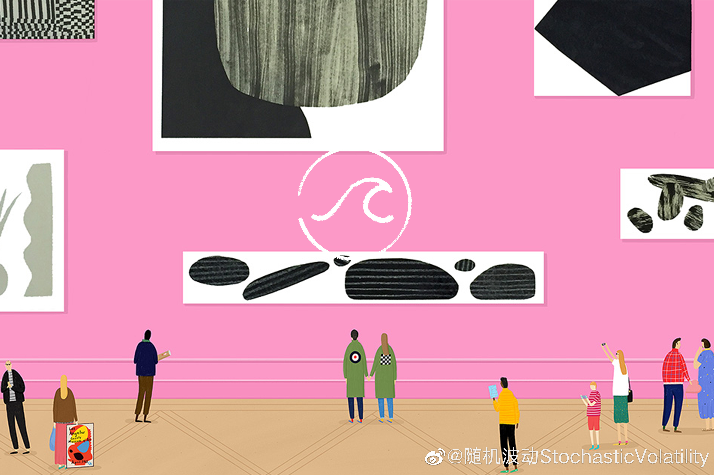

随机波动怎么从字幕组说到了开源软件？嘉宾似乎对开源软件的理解停留在20年前。现在连付费软件的旗帜微软都在拥抱开源了，开源可绝对面对付费软件是处在胜势的……
@随机波动StochasticVolatility:
已是腊月二十九，#随机波动#不停更！围绕日前的字幕组争议，我们请到了老朋友、北京外国语大学外国文学研究所王炎教授，请他从电影研究学者和资深影迷的角度出发，聊了聊盗版与知识经济时代占有与分享的辩证法，收听及阅读🔗为 从字幕组到灵魂拷问：知识经济的时代，为何还是工业时代的头脑？| 随机波动042。
从字幕组到灵魂拷问：知识经济的时代，为何还是工业时代的头脑？| 随机波动042。
王炎老师认为，过去40年的盗版资源对于中国人精神生活的影响是巨大的，使得中国形成了自己的影迷文化，不仅为今天的票房成就打下了基础，也为中国电影培养了一大批非学院派的人才。同时，从实物经济到知识经济的转型，也让过去资本主义的版权运营方式不再能适应时代的要求。知识生产的产品不再属物，而是属人，资本无法直接干预知识生产的产品，更难以买断人的创造力。免费分享带来交流、进步和流量，这是互联网最重要的精神，却无法直接转化为创作者的收益。正如王炎老师所说，这是一个充满悖论至今仍然无解的问题，但也是我们这个时代的真问题，更是对于随机波动的一次灵魂拷问。
收听及阅读🔗：从字幕组到灵魂拷问：知识经济的时代，为何还是工业时代的头脑？| 随机波动042
王炎老师认为，过去40年的盗版资源对于中国人精神生活的影响是巨大的，使得中国形成了自己的影迷文化，不仅为今天的票房成就打下了基础，也为中国电影培养了一大批非学院派的人才。同时，从实物经济到知识经济的转型，也让过去资本主义的版权运营方式不再能适应时代的要求。知识生产的产品不再属物，而是属人，资本无法直接干预知识生产的产品，更难以买断人的创造力。免费分享带来交流、进步和流量，这是互联网最重要的精神，却无法直接转化为创作者的收益。正如王炎老师所说，这是一个充满悖论至今仍然无解的问题，但也是我们这个时代的真问题，更是对于随机波动的一次灵魂拷问。
收听及阅读🔗：
- 